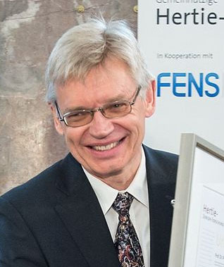
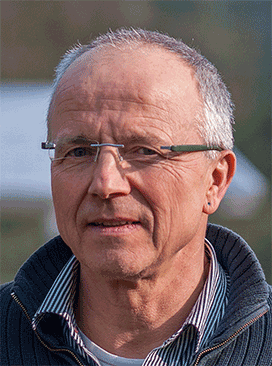

✨ STOCKHOLM 2026.10.05 速報
カール・ダイセロス
米スタンフォード大学 教授

ペーター・ヘーゲマン
独フンボルト大学 教授

ゲオルク・ナーゲル
独ビュルツブルク大学 教授
🧬 設計図（DNA） ➔ 道具マシン（タンパク質）
膜電位 (MEMBRANE POTENTIAL)
-70 mV (静止)
⚡ 門が開くとNa⁺が流入してパチッと発火！
🌱 単細胞緑藻クラミドモナス：青色光（470nm）を感知
発見者
ヘーゲマン ＆ ナーゲル
藻からチャネルロドプシンを発見
🔬 ウイルス運び屋 ➔ 脳神経が光スイッチを装備！
光遺伝学の開拓者
カール・ダイセロス教授
藻のセンサーを脳神経へ導入し光制御を実現
OSCILLOSCOPE (活動電位リアルタイム波形)
READY : -70mV
🧠
心の回路の解明
恐怖・うつ病・記憶の正体を特定
👁️
失明網膜の視力回復
光受容を失った眼に視覚を取り戻す
💊
パーキンソン病の改善
異常回路を光パルスでリセット
カール・ダイセロス
ペーター・ヘーゲマン
ゲオルク・ナーゲル